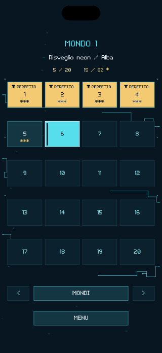
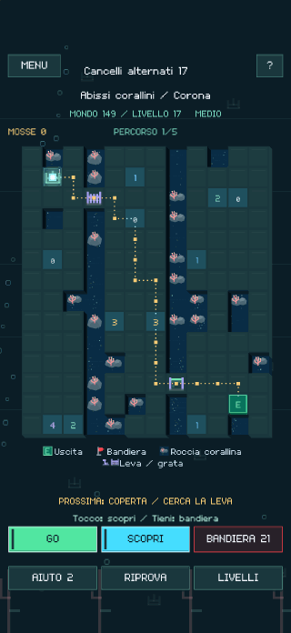
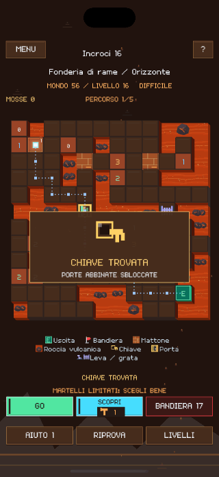
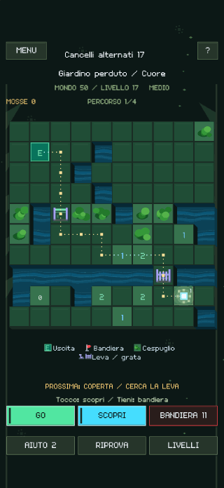
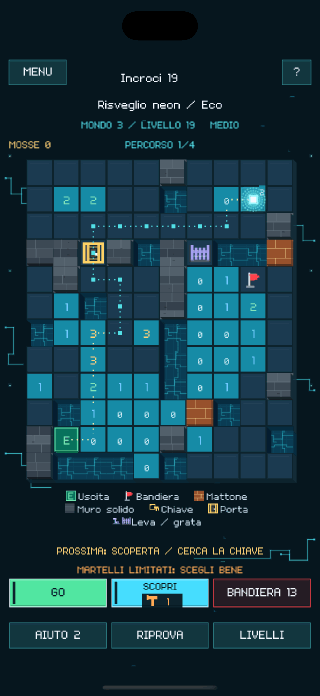
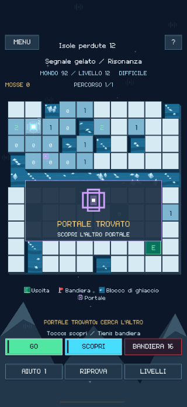
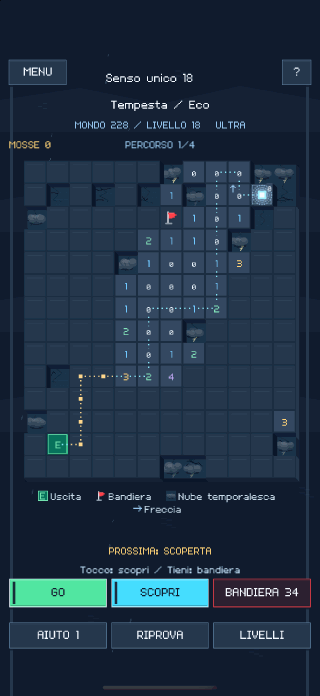
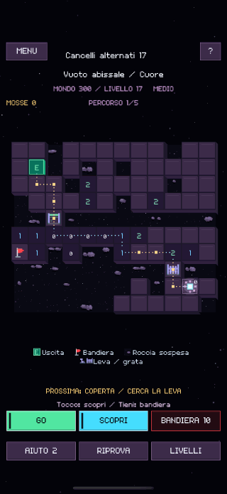

Ogni casella cambia il percorso.
Scopri una casella per leggere l’indizio. Segnala le mine con le bandiere e premi GO per far avanzare la luce. GO END la porta all’uscita quando hai scoperto un percorso sicuro.
LUMEN MINE
Leggi i numeri, segnala le mine e scopri un percorso sicuro fino all’uscita. Tu prepari il percorso. La luce lo segue.
Scopri una casella per leggere l’indizio. Segnala le mine con le bandiere e premi GO per far avanzare la luce. GO END la porta all’uscita quando hai scoperto un percorso sicuro.
Rompi i mattoni con pochi martelli a disposizione, apri porte, aziona leve e attraversa portali. Usare una chiave per una porta può lasciare chiusa l’altra.
Puoi raggiungere l’uscita senza scoprire tutte le caselle. Risolvi una parte più ampia della griglia per ottenere un risultato perfetto e guadagnare stelle.









Esplora gratis i primi tre mondi. Un solo acquisto in-app sblocca il gioco completo, con 300 mondi e 6.000 rompicapi in totale.